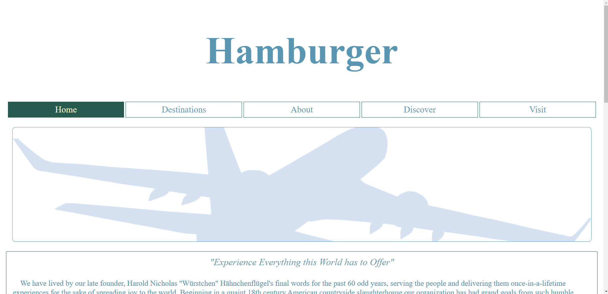
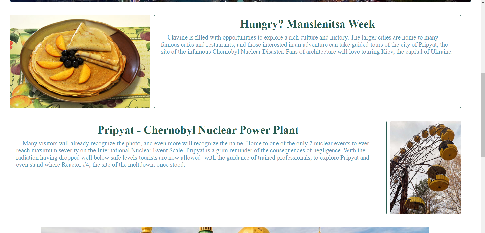
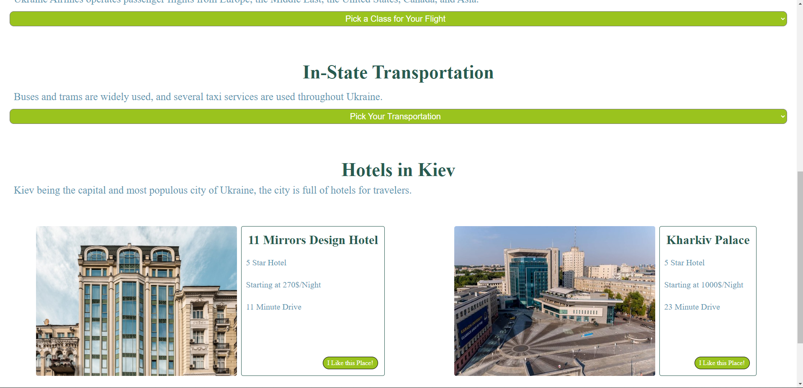

Tourism Site
Development
One of the more challenging projects for me was a project at CART to make a website for a tourism agency. This project had a lot of moving parts. We needed to pick a country to make a page about, explore some of the cultural aspects of each country that would appeal to tourists of a specific age demographic, and then write a bunch of copy about them. This project was done in groups of 3 as well, so the group had to work together in order to design a site-wide theme. We needed to write a lot of text and find a lot of images for this project, so there was a lot of time going into finding all the information we could.
This project was going to be the largest yet, and we needed to implement concepts that were relatively new to us at the time. CSS, and more specifically media queries, would be required on this project. We needed to style the page properly for desktops, tablets, and phones. Learning how to do this properly took a long time, and it took even longer to figure out styles and layouts that would work for smaller devices.
The biggest challenge in this project was working with a group on something of this scale. Previous projects with groups had been relatively short and took much less time and effort. Communication was less important for previous projects as well, since they could be worked on independently most of the time.This project, however, required much more communication between group members in order to work out the design. The entire site needed to be styled in the same way, so figuring out a layout and style that worked for everyone was time consuming. We had a lot of conflicting ideas, and one of my group members started working on their pages completely alone without considering the layout we had all previously agreed upon. We constantly needed to redo or go back and change critical elements of the project to fix issues that wouldn't have been issues had we communicated earlier on.
The CART habits of mind like communication and collaboration were the most important parts of the project. We eventually got better at communicating and working together, and the assignment came out fine. We just needed to persist and work a lot outside of class time in order to finish the project on time. By collaborating more outside of class we ended up with a good final product despite all the challenges we had with communication and getting work done on time. You can view the final product here.
  